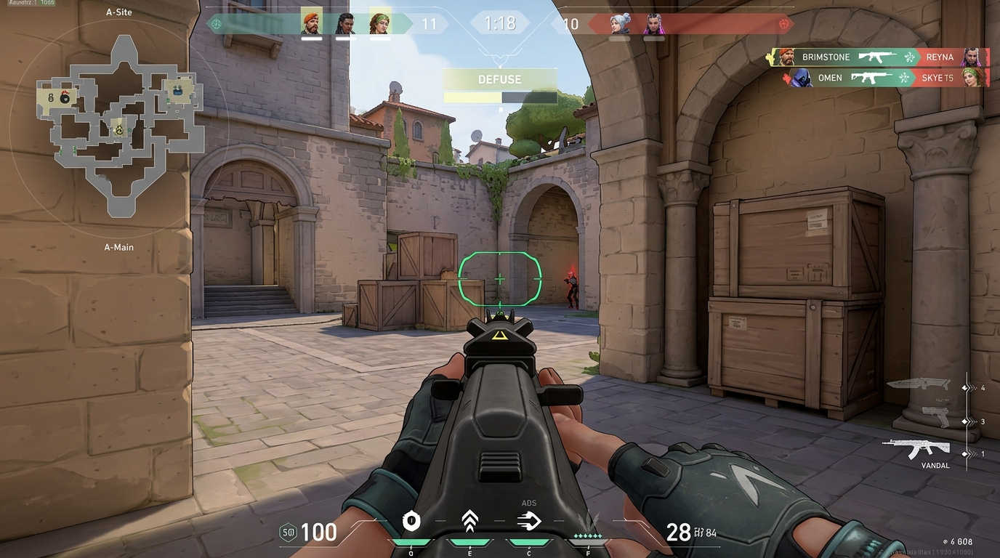
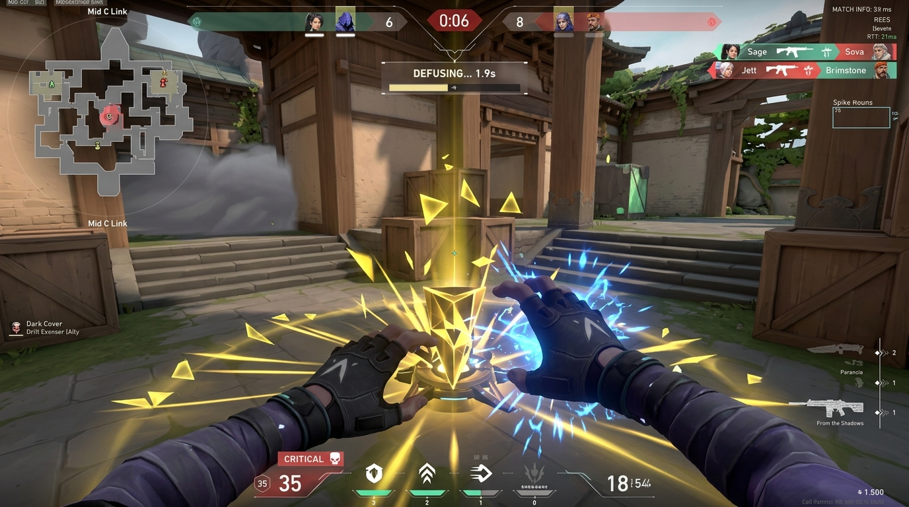
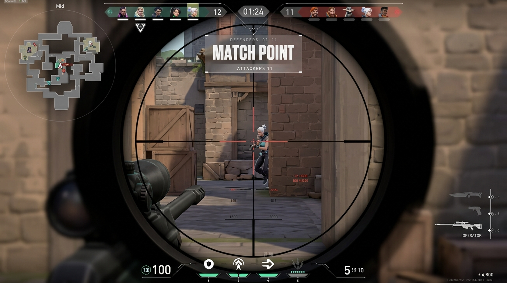
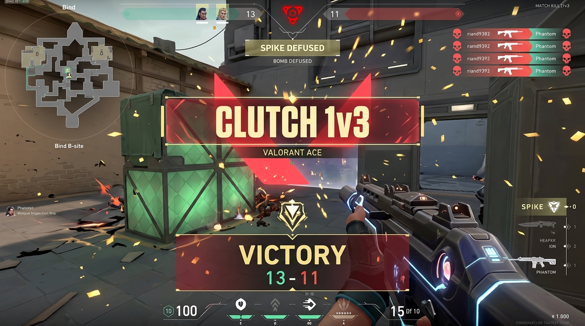
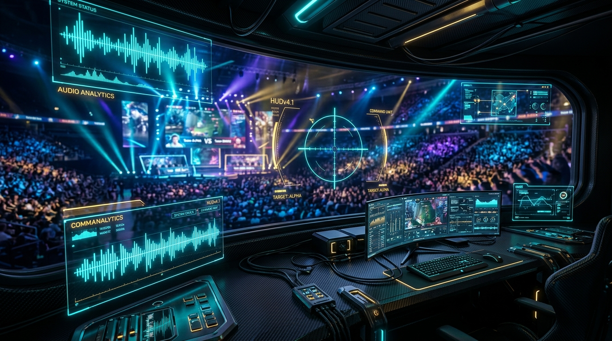

Translates Windows stereo loopback into spatial vector geometry. Footsteps, reloads, and defusal pins through walls at 042° NE appear as crisp hardware overlay blips. Built for deaf gamers and tactical esports dominance.
Spraying in Valorant creates random bullet bloom. GamePilot Pro provides an ambient peripheral metronome ring that pulses in exact sync with weapon recoil cooldowns.
Isolates the spike's acoustic beeping frequency and projects a live mathematical countdown. Instantly shows whether you have time for a full stick, half defuse, or need to evacuate blast radius.
Built by a Class 9 Indian student creator for deaf and competitive gamers worldwide. Free forever, digitally signed, zero ads, zero memory injection.